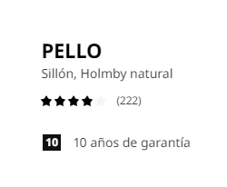

El sillón PELLO es un asiento cómodo que transmite relajación y con el que puedes crear zonas de confort en cualquier parte de la casa. El secreto está en un buen soporte para la espalda y una estructura ligeramente flexible.
Gracias a su forma curva y ligeramente flexible, el sillón PELLO ofrece un buen apoyo a la espalda y el cuello.
Un sillón ligero con un diseño depurado que te ayuda a crear un espacio cómodo para relajarse en cualquier parte de la casa.
El uso de un material renovable como la madera en la fabricación de este producto, nos permite evitar la utilización de materiales fósiles u otros materiales no renovables.
Queremos tener un impacto positivo en el planeta. Por eso, queremos que en 2030 todos los materiales usados para fabricar nuestros productos sean reciclados o provengan de fuentes renovables, y se hayan producido de manera responsable.
Valoraciones usuarios
¿Qué piensan los usuarios de está silla?

Valoración en la página
Se monta muy fácil, es muy cómodo, se desenfunda rápidamente para lavarlo. Muy contenta con la compra.-Gracita Lopez Molina.
Tenia dudas si sería cómodo, realmente solo lo quería para cuando vinieran invitados, pero debo decir que es más cómodo de lo que imaginaba y queda muy bien en el rincón del salón.-Javier Puerta Robles.
Necesitaba un sillón cómodo con un precio ajustado y ha cumplido mis expectativas.-Fernando Carrasco Melguizo.
Muy cómodo pero la parte de las piernas del acolchado se sale con demasiada facilidad.-Marcos Gomez Garcia.
És còmoda per a l'estona que m'assec a llegir, però si allargo mes temps comença a clavar-se el ferro a les cames. Però per al que la vaig comprar és perfecta.-Esteve Garcia Martínez
Unes los soportes metalicos (los negros), atornillandolos debidamente.
Le pones la funda de color crema y la inmovilizas.
Colocas los soportes (patas) del sillón, atornillandolos.
Le pones el cojín y ya lo tienes :).
És còmoda per a l'estona que m'assec a llegir, però si allargo mes temps comença a clavar-se el ferro a les cames. Però per al que la vaig comprar és perfecta.-Esteve Garcia Martínez